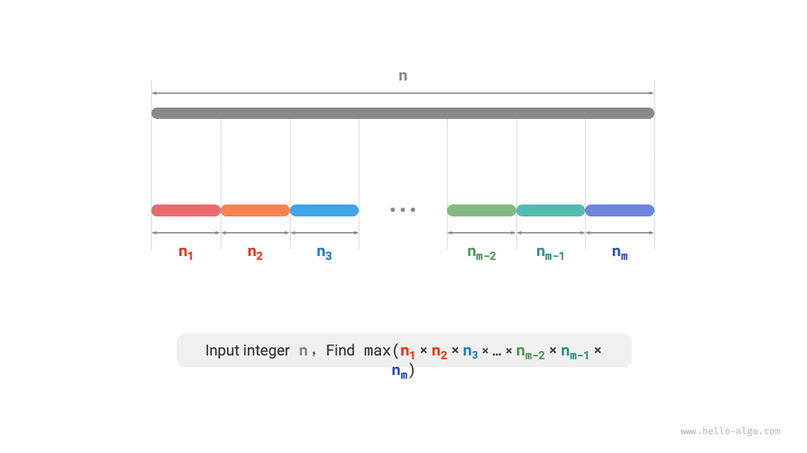
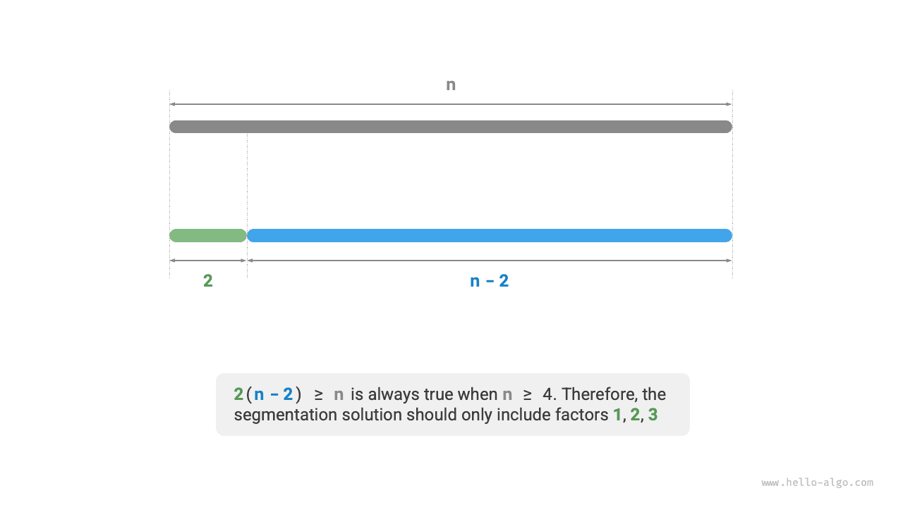
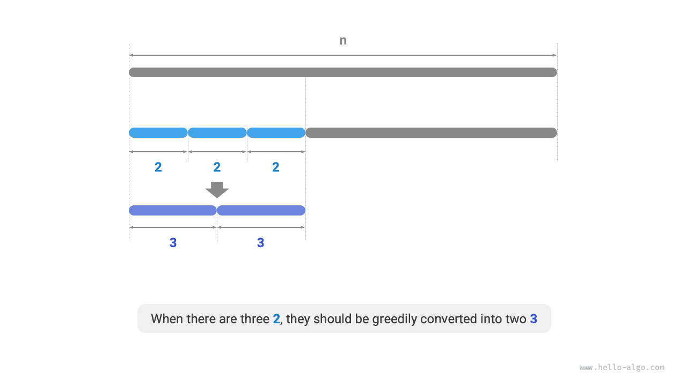
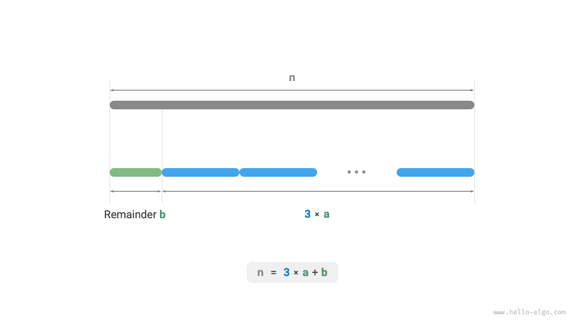

الخوارزميات الجشعة
مسألة القطع بأقصى حاصل ضرب
بمعطى عدد صحيح موجب $n$، قطّعه إلى مجموع عددين صحيحين موجبين على الأقل، وأوجد أكبر حاصل ضرب للأعداد الناتجة، كما يوضح الشكل أدناه.

لنفترض أننا قطّعنا $n$ إلى $m$ من العوامل الصحيحة، حيث يُرمز إلى العامل رقم $i$ بـ$n_i$، أي
$$ n = \sum_{i=1}^{m}n_i $$
هدف هذه المسألة هو إيجاد أكبر حاصل ضرب لجميع العوامل الصحيحة، أي
$$ \max(\prod_{i=1}^{m}n_i) $$
نحتاج إلى تحديد عدد الأجزاء $m$ وما ينبغي أن تكون عليه كل $n_i$.
تحديد الاستراتيجية الجشعة
كقاعدة عامة، كثيراً ما يكون حاصل ضرب عددين أكبر من مجموعهما. لنفترض أننا قطعنا عاملاً قدره $2$ من $n$؛ فيكون حاصل الضرب الناتج $2(n-2)$. ولنقارن هذا الحاصل مع $n$:
$$ \begin{aligned} 2(n-2) & \geq n \newline 2n - n - 4 & \geq 0 \newline n & \geq 4 \end{aligned} $$
كما يوضح الشكل أدناه، عندما $n \geq 4$، فإن اقتطاع $2$ سيزيد حاصل الضرب، وهذا يدل على أن الأعداد الصحيحة الأكبر من أو التي تساوي $4$ ينبغي أن تُقطَّع جميعها.
الاستراتيجية الجشعة الأولى: إذا احتوى مخطط القطع على عامل $\geq 4$، فينبغي تقطيعه أكثر. ويجب ألا يحتوي مخطط القطع النهائي إلا على العوامل $1$ و$2$ و$3$.

بعد ذلك، لننظر في أي عامل هو الأفضل. بين العوامل الثلاثة $1$ و$2$ و$3$، من الواضح أن $1$ هو الأسوأ، لأن $1 \times (n-1) < n$ يظل صحيحاً دائماً، أي أن اقتطاع $1$ سيقلل حاصل الضرب فعلاً.
كما يوضح الشكل أدناه، عندما $n = 6$، لدينا $3 \times 3 > 2 \times 2 \times 2$. وهذا يعني أن اقتطاع $3$ أفضل من اقتطاع $2$.
الاستراتيجية الجشعة الثانية: ينبغي ألا يحتوي مخطط القطع على أكثر من عاملي $2$، لأن ثلاثة عوامل من $2$ يمكن دائماً استبدالها بعاملين من $3$ للحصول على حاصل ضرب أكبر.

وخلاصة القول، يمكن اشتقاق الاستراتيجيات الجشعة التالية.
- بمعطى عدد صحيح $n$، اقطع العامل $3$ باستمرار حتى يصبح الباقي $0$ أو $1$ أو $2$.
- عندما يكون الباقي $0$، فهذا يعني أن $n$ مضاعف للعدد $3$، فلا حاجة إلى أي إجراء آخر.
- عندما يكون الباقي $2$، لا تقطعه أكثر؛ اتركه كما هو.
- عندما يكون الباقي $1$، بما أن $2 \times 2 > 1 \times 3$، استبدل آخر $3$ والباقي $1$ بعاملين من $2$.
تنفيذ الشيفرة
كما يوضح الشكل أدناه، لا نحتاج إلى حلقات لتقطيع العدد. بل نستخدم القسمة الصحيحة للحصول على عدد العوامل $3$، ويُرمز إليه بـ$a$، ونستخدم عملية باقي القسمة للحصول على الباقي $b$، فنحصل على:
$$ n = 3 a + b $$
يرجى ملاحظة أنه في الحالة الحدية $n \leq 3$، يجب اقتطاع $1$، ليكون حاصل الضرب $1 \times (n - 1)$.
Go
/* مسألة القطع بأقصى حاصل ضرب: خوارزمية جشعة */
func maxProductCutting(n int) int {
// عندما n <= 3، يجب قطع 1
if n <= 3 {
return 1 * (n - 1)
}
// اقطع 3 جشعاً، a هو عدد العوامل 3 وb هو الباقي
a := n / 3
b := n % 3
if b == 1 {
// عندما يكون الباقي 1، حوّل الزوج 1 * 3 إلى 2 * 2
return int(math.Pow(3, float64(a-1))) * 2 * 2
}
if b == 2 {
// عندما يكون الباقي 2، لا تفعل شيئاً
return int(math.Pow(3, float64(a))) * 2
}
// عندما يكون الباقي 0، لا تفعل شيئاً
return int(math.Pow(3, float64(a)))
}
TypeScript
/* مسألة القطع بأقصى حاصل ضرب: خوارزمية جشعة */
function maxProductCutting(n: number): number {
// عندما n <= 3، يجب قطع 1
if (n <= 3) {
return 1 * (n - 1);
}
// اقطع 3 جشعاً، a هو عدد العوامل 3 وb هو الباقي
let a: number = Math.floor(n / 3);
let b: number = n % 3;
if (b === 1) {
// عندما يكون الباقي 1، حوّل الزوج 1 * 3 إلى 2 * 2
return Math.pow(3, a - 1) * 2 * 2;
}
if (b === 2) {
// عندما يكون الباقي 2، لا تفعل شيئاً
return Math.pow(3, a) * 2;
}
// عندما يكون الباقي 0، لا تفعل شيئاً
return Math.pow(3, a);
}

يعتمد التعقيد الزمني على كيفية تنفيذ الرفع إلى قوة في لغة البرمجة. وباتخاذ Python مثالاً، توجد ثلاث طرق شائعة لحساب القوى.
- لكل من المعامل
**والدالةpow()تعقيد زمني $O(\log a)$. - تستدعي الدالة
math.pow()داخلياً الدالةpow()من مكتبة C، وهي تنفذ الرفع إلى قوة للأعداد العائمة، بتعقيد زمني $O(1)$.
يستخدم المتغيران $a$ و$b$ مقداراً ثابتاً من المساحة الإضافية، لذا يكون التعقيد المكاني $O(1)$.
إثبات الصحة
نستخدم البرهان بالتناقض، وننظر في الحالة $n \geq 4$ فقط.
- جميع العوامل $\leq 3$: لنفترض أن مخطط القطع الأمثل يتضمن عاملاً $x \geq 4$. فيمكن تقطيعه أكثر إلى $2(x-2)$ للحصول على حاصل ضرب أكبر (أو مساوٍ). وهذا يناقض الافتراض.
- مخطط القطع لا يحتوي على $1$: لنفترض أن مخطط القطع الأمثل يتضمن عاملاً قدره $1$. فيمكن دمجه في عامل آخر للحصول على حاصل ضرب أكبر. وهذا يناقض الافتراض.
- مخطط القطع يحتوي على عاملي $2$ على الأكثر: لنفترض أن مخطط القطع الأمثل يتضمن ثلاثة عوامل من $2$. فيمكن استبدالها بعاملين من $3$، للحصول على حاصل ضرب أكبر. وهذا يناقض الافتراض.